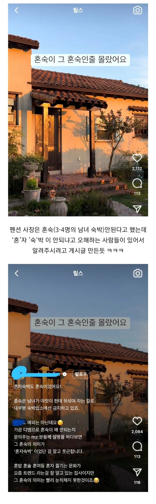
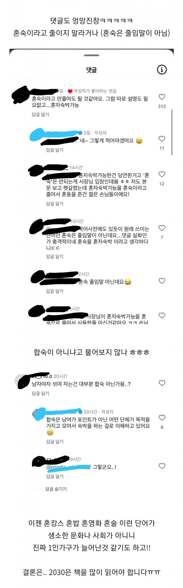

씨발 뜻을 모르겠으면 댓글달기 전에 사전을 찾아봐라
무슨 종이사전으로 몇분씩 걸리는것도 아니고 인터넷 검색 딸깍하면 나오는구만 저능아 핑거프린세스새끼들이
대만갓을때 도미 남녀혼숙 재밋엇는데
빤스차림으로못자는게문제였지만 여행노가리까고 잼섯음
애미시벌 저 댓글들 다 유졸이냐 ?
중국인이래
모르는게 문제가 아니라 적반하장의 뻔뻔함이 문제 아니냐
바로 위에 글 길게 쓴 애 뻔뻔한거 봐라ㅋ
어휘력 떨어지는걸 또 남탓하고 있다ㅋㅋ 대박이다 진짜
필터 걸려서 못봤던 애들이 기술이 발전함에 따라 필터가 하나씩 해지 되면서 보이는거라고 생각함
??? : 왜 금일인데 목요일이죠??
그냥 저능아 숙박 불가
해놓으면 됨
자기가 저능아인지 모름
이제 자살도 혼살이라고 불러라
지피티한테 좀 물어바
혼숙의 의미를 모르는거 = 그럴수있음
혼숙을 혼자숙박으로 헷갈림 = 그럴수있음
그걸 사장탓을 하는거 = 싸가지없는 병신새끼
혼술 혼밥은 혼자 한다는 뜻인데 왜 혼숙만 남녀 같이 자는거냐 이건 단어 만든 사람이 잘못 만든듯
ㅋㅋㅋㅋㅋ
개빡대가리새끼들
진짜 좆빡대가리네
합숙이가 됩시다 합!
어휘력 개 ㅈ된 세대 ㅋㅋ
ㄹㅇㅋㅋ
혼탕은 혼자 탕수육 대자임?
족보를 족발보쌈세트로 알고 있다곤 하더라
한국어의 어려움이지
혼술 혼밥 : 1인만 가능
혼탕 : 남녀 구성 무관
혼성 경기 : 남 녀 각각 1인만 가능
혼숙 금지 : 남녀 각각 1인은 해당안되고 남녀중 2인이상있어야함.
각각1인도 혼숙 아님?
ㅇㅇ.. 그건 혼숙이 아니라 커플이라 통과임 보통
엄밀하게 따지자면 성별이 다른 인원이 함께 숙박하는걸 혼숙이라고 하니까 커플도 포함이 되는건 맞는데
일반적으로 2인 커플은 혼숙금지에 포함시키지 않는경우가 일반적이긴 함
같은 이유로 가족도 예외로 치기도 하고
제발 컨셉이라해줘
단어를 쓰기 전에 검색 좀 해보고 써라
이래도 짱 어쩌구 하면서 한자공부 반대하는 병신 저지능새끼들 개드립에도 많음ㅋ
모르면 물어보라고...
옛날처럼 국어사전 찾아봐야 하는 것도 아니고, 딸깍으로 정보를 찾을 수 있는 세상에 살면서도 무식의 대향연 ㅋㅋ
ㅋㅋㅋㅋㅋㅋㅋㅋㅋㅋㅋ 하도 혼밥 혼여 이러니까 헷갈렸나보다. 문해력 작살난 거 티나긴 하네
Ai라도 좀 써
난 혼자니까 혼인신고나 하러 가야겠다
모를 순 있는데
내가 모르니까 니들이 다 바꿔라는 태도를 하는 애들이 진짜 문제임
항시 책을 읽어야 하느니라~
병신들이 정말 많아졌구나